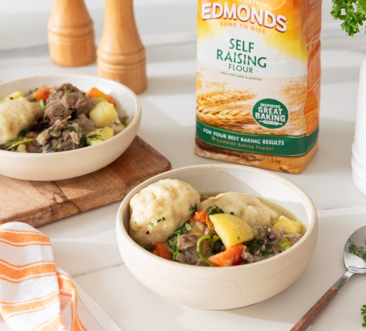

Lasagne

Desciption
Enjoy traditional Māori kai with this hearty Matariki Boil Up, served with dough boys (motumotu). Made with only
a handful of ingredients, it’s perfect for a filling feast with your loved ones.
Ingredients
Meat Sauce:
- 1 tbsp salt
- 2kg meaty pork or bacon bones
- 2 medium potatoes, peeled and cut into chunks
- 2 medium kumara, peeled and cut into chunks
- ½ kamokamo or 2 medium carrots
- ½ small cabbage or 750g watercress, chopped
Doughboys:
- 1½ cups Self-Raising Flour + extra for rolling
- 1 cup Flour
- 1 tsp salt
Method
- Bring 2 litres of water to the boil in a large pot. Add the salt (no salt if using bacon bones).
- Add the bones, cover and simmer for 1½ hours. Top up with water if it gets too low.
- For the doughboys, mix the flours and salt with 1 cup warm water to form a soft dough. Divide and mould into
8 balls. Cover until needed.
- Add the root vegetables to the pot and continue cooking gently for 5 minutes.
- Add the greens and doughboys to the pot.
- Boil gently with the lid on for 8–10 minutes, until the doughboys are big and fluffy. Serve and enjoy!